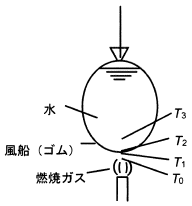

令和元年度（再試験） 問35 化学プロセス
ゴム製水風船に炎をあてても、短時間では風船は破れない。この現象を「気相（燃焼ガス）境膜－ゴム製の壁－液相（水）境膜」とした、「固体壁を通しての 2 流体間の対流伝熱」のモデルで解け。その結果、風船外側表面温度 \(T_1\) として最も近い値はどれか。ただし、水の温度 \(T_3 = 20\ ^\circ\mathrm{C}\)、水側の伝熱係数 \(h_3 = 1000\ \mathrm{W/(m^{2}\,K)}\)、風船ゴムの厚さ \(\delta = 200\ \mathrm{\mu m}\)、風船ゴムの熱伝導率 \(\lambda = 0.13\ \mathrm{W/(m\,K)}\)、燃焼ガス温度 \(T_0 = 800\ ^\circ\mathrm{C}\)、燃焼ガス側の伝熱係数 \(h_0 = 5.0\ \mathrm{W/(m^{2}\,K)}\) とする。

固体の熱流束はフーリエの法則 \(q = -k\,(dT/dx)\) から計算できます。\(dT/dx\) は温度の変化量 \(dT\) と距離の変化量 \(dx\) の比であることを表します。
熱流束 \(q\) の単位 \(\mathrm{W/m^{2}}\) は W を変形して \(\mathrm{J/(s\cdot m^{2})}\) とも記載できます。つまり熱流束は、ある断面に対して直交する方向に伝わる、単位時間当たりの熱量を意味します。そのためゴムと水と空気のように密着して連続的に伝熱する状態では、同一面積における伝熱量（熱流束）が同じとして計算できます。
フーリエの法則より、ゴムの熱流束は
$$\frac{0.13\,\mathrm{W/(m\,K)} \times (T_1 - T_2)\,\mathrm{K}}{0.0002\,\mathrm{m}} = 650\,T_1 - 650\,T_2\ \mathrm{W/m^{2}}$$空気の熱流束は \(5.0\,\mathrm{W/(m^{2}\,K)}\times(800 - T_1)\,\mathrm{K} = 4{,}000 - 5\,T_1\ \mathrm{W/m^{2}}\) です。
水の熱流束は \(1{,}000\,\mathrm{W/(m^{2}\,K)}\times(T_2 - 20)\,\mathrm{K} = 1{,}000\,T_2 - 20{,}000\ \mathrm{W/m^{2}}\) です。
今回は \(T_1\) および \(T_2\) が不明な値です。この場合、総括伝熱係数から一連の熱流束を計算したうえでそれぞれの温度を求めます。
$$\frac{1}{U} = \frac{1}{5} + \frac{0.0002}{0.13} + \frac{1}{1{,}000} \;\Rightarrow\; U = 4.9375\ \mathrm{W/(m^{2}\,K)}$$熱流束は \(4.9375\times(800 - 20) = 3851.25\ \mathrm{W/m^{2}}\) です。空気の熱流束の式を用いて、\(4{,}000 - 5\,T_1 = 3851.25\) となり、\(T_1 = 29.8\ ^\circ\mathrm{C}\) です。よって、最も近い値は 30 ℃ です。同様に計算すると \(T_2 = 23.9\ ^\circ\mathrm{C}\) です。